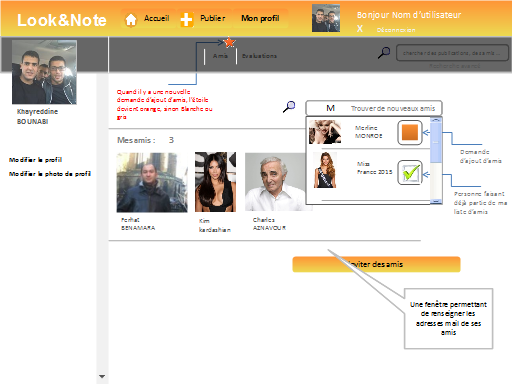

|

|
Liste d'amis
Cette page est relative à la liste d'amis de l'utilisateur. il pourra inviter de nouveaux amis en renseignant leurs adresses mail ou effectuer des recherches dans la base de données du site.
Lorsqu'il reçoit une nouvelle demande d'ajout d'amis, une étoile orange s'affiche sur l'onglet "Amis". De la même manière, cette dernière s'affiche pour les onglets "Evaluations" et "Publications.
|